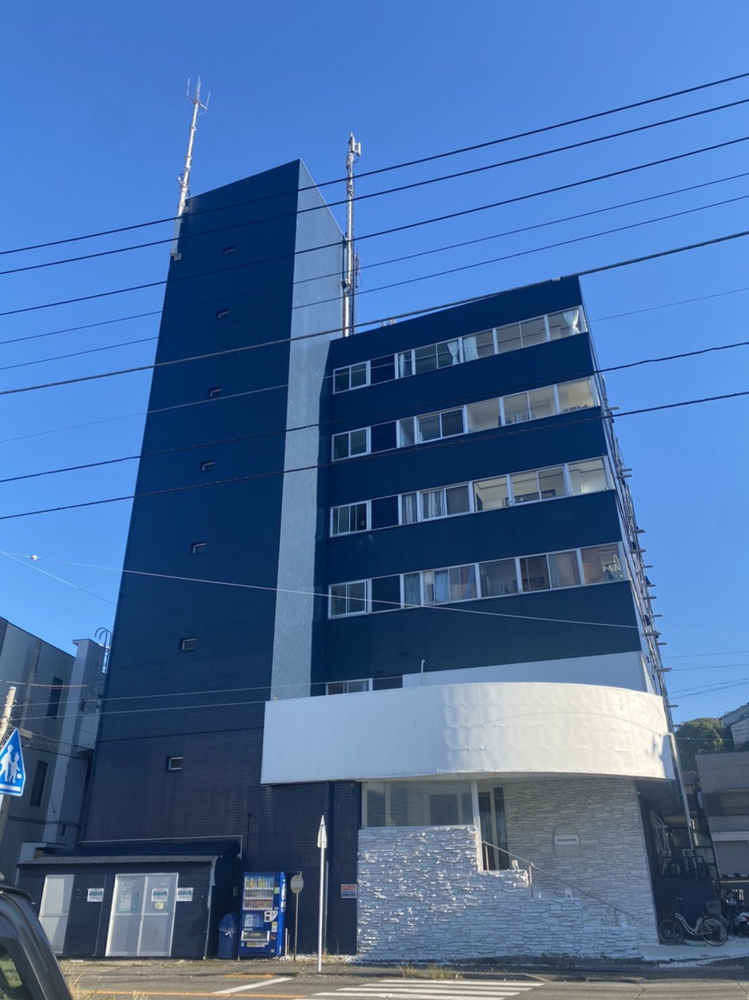

釣り堀エサ、
100種類以上。
価格で勝負の釣りえさ専門店。
三浦市・三崎港、朝の釣行前に。
- 営業時間
- 5:30–7:00
- 定休日
- 火曜日祝祭日は営業
営業予定はみうら海王に準じて変更する場合があります。営業カレンダーを確認（みうら海王・新しいタブ）
三崎港バス停から徒歩 4 分
うらりマルシェから徒歩 1 分

店舗は THE OCEAN VIEW miura の2階です。
※正面玄関及び建物間のスペースへの駐車停車はご遠慮ください。
新着情報
エサを探す
日時は掲載データの取得時刻です。在庫の確認日時ではありません。